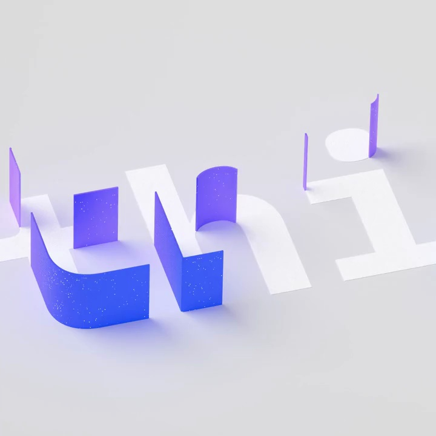
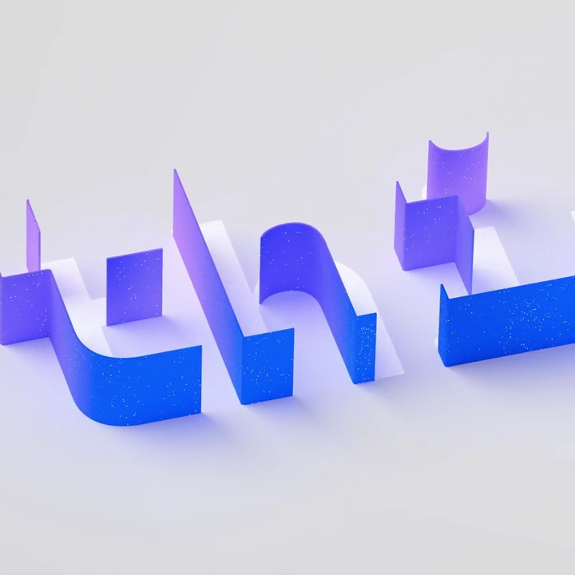
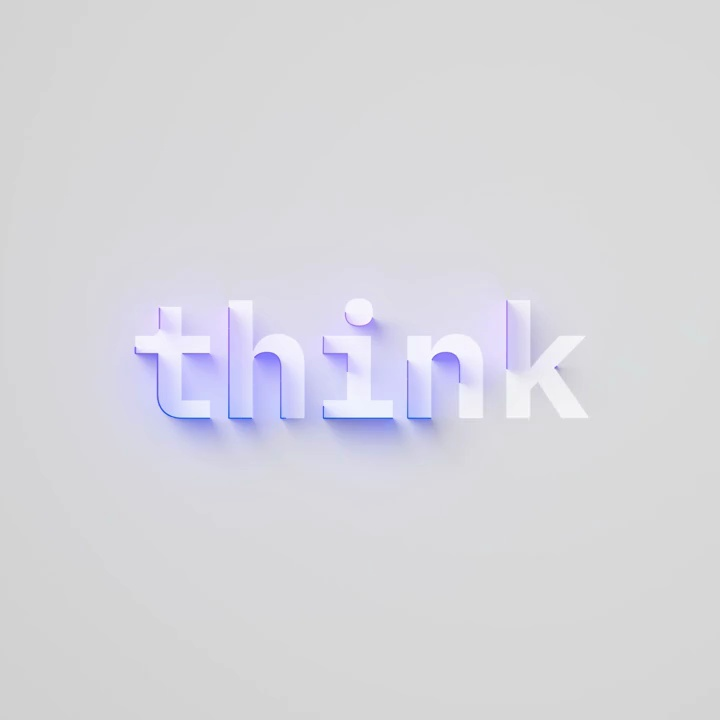
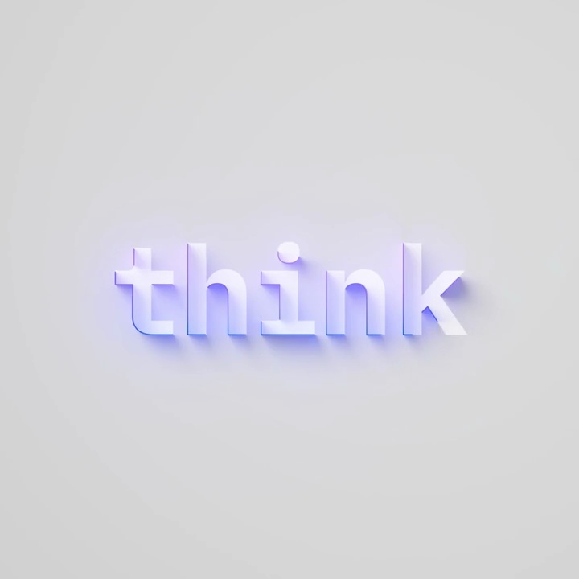

IBM / V368
Think｜大会字标
立体字母从分散朝向归到同一阅读方向，短促完成后保留安静的字标。
构图与编排 可播放 · 可替换内容
整体编排规则示例
查看 HTML 源码
<!doctype html><html lang="zh-CN"><meta charset="utf-8"><meta name="viewport" content="width=device-width,initial-scale=1"><title>Think｜大会字标 · sequence</title><style>html,body{margin:0;width:100%;height:100%;overflow:hidden;background:#dfdfe0}canvas{display:block;width:100%;height:100%;object-fit:contain}</style><body data-mode="sequence"><canvas width="1000" height="600"></canvas><script src="data.js"></script><script src="common.js"></script><script src="scene.js"></script><script src="bridge.js"></script></body></html>画面元素立体字母部件蓝紫侧面浅灰地面软阴影
MOTION LANGUAGE
动作与构图
局部动作 · 构图规则
01
旋转归位比整体缩放更重要
旋转归位比整体缩放更重要规则示例
查看 HTML 源码
<!doctype html><html lang="zh-CN"><meta charset="utf-8"><meta name="viewport" content="width=device-width,initial-scale=1"><title>Think｜大会字标 · sequence</title><style>html,body{margin:0;width:100%;height:100%;overflow:hidden;background:#dfdfe0}canvas{display:block;width:100%;height:100%;object-fit:contain}</style><body data-mode="clip" data-start="0" data-end="0.9"><canvas width="1000" height="600"></canvas><script src="data.js"></script><script src="common.js"></script><script src="scene.js"></script><script src="bridge.js"></script></body></html>开始能看见字母部件的侧面与曲面，归位后形成完整 think。相邻字母使用轻微错峰，最终字距与基线统一；镜头拉远给完整字形留空间。
02
浅地面与冷色侧面形成体积
浅灰舞台衬托浅色字面，蓝紫色侧面提供深度，阴影落向一致。使用小写无衬线字，字母圆弧与直线的厚度协调，停留段不要持续摇摆。
03
适合短会议名或产品名
替换字形时重新安排部件朝向与归位顺序。保留“局部材质→完整可读字标”，名称长时优先减小字间距变化而非压窄每个字。
SEQUENCE
段落与节奏
点击段落，定位到上方编排示意。




画面参考 · 离散静帧
KEEP THE RELATIONSHIPS
制作其他主题
- 替换字形时重新安排部件朝向与归位顺序。保留“局部材质→完整可读字标”，名称长时优先减小字间距变化而非压窄每个字。
制作约束
立体字母部件 / 蓝紫侧面 / 浅灰地面 / 软阴影
- 立体字母从分散朝向归到同一阅读方向，短促完成后保留安静的字标。
- 开始能看见字母部件的侧面与曲面，归位后形成完整 think。相邻字母使用轻微错峰，最终字距与基线统一；镜头拉远给完整字形留空间。
- 浅灰舞台衬托浅色字面，蓝紫色侧面提供深度，阴影落向一致。使用小写无衬线字，字母圆弧与直线的厚度协调，停留段不要持续摇摆。